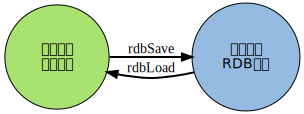

RDB
在运行情况下， Redis 以数据结构的形式将数据维持在内存中
为了让这些数据在 Redis 重启之后仍然可用， Redis 最初提供了 RDB 持久化模式：
- 在 Redis 运行时， RDB 程序将 当前内存 中的 数据库快照 保存到 磁盘文件 中
- 在 Redis 重启动时， RDB 程序可以通过 载入 RDB 文件 来 还原 数据库的状态

RDB 功能最核心的是 rdbSave 和 rdbLoad 两个函数
- 前者用于 生成 RDB 文件 到磁盘
- 后者则用于将 RDB 文件中的数据重新 载入 到 内存 中
本章先介绍 SAVE 和 BGSAVE 命令的实现， 以及 rdbSave 和 rdbLoad 两个函数的运行机制 然后以图表的方式， 分部分来介绍 RDB 文件的组织形式 因为涉及 RDB 运行的相关机制， 如果还没了解过 RDB 功能的话， 请先阅读 Redis 官网上的 persistence 手册
保存
rdbSave 函数负责将 内存中的数据库数据 以 RDB 格式 保存 到 磁盘 中， 如果 RDB 文件已 存在 ， 那么新的 RDB 文件将 替换 已有的 RDB 文件。在保存 RDB 文件期间， 主进程 会被 阻塞 ， 直到保存完成为止
SAVE 和 BGSAVE 两个命令都会调用 rdbSave 函数，但它们调用的方式各有不同：
SAVE: 直接调用 rdbSave ，阻塞 Redis 主进程，直到保存完成为止
在主进程阻塞期间，服务器不能处理客户端的任何请求
BGSAVE: 则 fork 出一个 子进程 ，子进程负责调用 rdbSave ，并在 保存完成之后 向 主进程 发送 信号 ，通知保存已完成
因为 rdbSave 在子进程被调用，所以 Redis 服务器在 BGSAVE 执行期间仍然可以继续处理客户端的请求
通过伪代码来描述这两个命令，可以很容易地看出它们之间的区别：
def SAVE(): rdbSave() def BGSAVE(): pid = fork() if pid == 0: rdbSave() # 子进程保存 RDB elif pid > 0: handle_request() # 父进程继续处理请求，并等待子进程的完成信号 else: handle_fork_error() # pid == -1, 处理 fork 错误
SAVE 、 BGSAVE 、 AOF 写入和 BGREWRITEAOF
除了了解 RDB 文件的保存方式之外， 可能还想知道 两个 RDB 保存命令能否同时使用？ 它们和 AOF 保存工作是否冲突？
SAVE
前面提到过， 当 SAVE 执行时， Redis 服务器是 阻塞 的， 所以当 SAVE 正在执行时， 新的 SAVE 、 BGSAVE 或 BGREWRITEAOF 调用都 不会产生任何作用
只有在上一个 SAVE 执行完毕、 Redis 重新开始接受请求之后， 新的 SAVE 、 BGSAVE 或 BGREWRITEAOF 命令才会被处理
另外， 因为 AOF 写入由 后台 线程完成， 而 BGREWRITEAOF 则由 子进程 完成， 所以在 SAVE 执行的过程中， AOF 写入和已经存在的 BGREWRITEAOF 可以 同时进行
BGSAVE
在执行 SAVE 命令之前， 服务器会 检查 BGSAVE 是否 正在执行 当中， 如果是的话， 服务器就不调用 rdbSave ， 而是向客户端 返回 一个 出错信息 ， 告知在 BGSAVE 执行期间， 不能执行 SAVE
这样做可以避免 SAVE 和 BGSAVE 调用的两个 rdbSave 交叉执行， 造成竞争条件
同样当 BGSAVE 正在执行时， 调用新 BGSAVE 命令的客户端会收到一个出错信息， 告知 BGSAVE 已经在执行当中
最后 BGREWRITEAOF 和 BGSAVE 不能同时执行：
- 如果 BGSAVE 正在执行，那么 BGREWRITEAOF 的重写请求 会被 延迟 到 BGSAVE 执行完毕之后进行，执行 BGREWRITEAOF 命令的客户端会收到 请求被延迟 的 回复
- 如果 BGREWRITEAOF 正在执行，那么调用 BGSAVE 的客户端将收到 出错信息 ，表示这两个命令 不能同时执行
BGREWRITEAOF 和 BGSAVE 两个命令在操作方面并没有什么冲突的地方， 不能同时执行它们只是一个性能方面的考虑 并发出两个子进程， 并且两个子进程都同时进行大量的磁盘写入操作， 这怎么想都不会是一个好主意
载入
当 Redis 服务器 启动 时， rdbLoad 函数就会被 执行 ， 它读取 RDB 文件， 并将文件中的数据库数据载入到内存中
- 在载入期间， 服务器每载入 1000 个键 就 处理 一次所有 已到达的请求
- 不过只有 PUBLISH 、 SUBSCRIBE 、 PSUBSCRIBE 、 UNSUBSCRIBE 、 PUNSUBSCRIBE 五个命令的请求会被正确地处理， 其他命令一律返回错误
等到载入完成之后， 服务器才会开始正常处理所有命令
发布与订阅功能和其他数据库功能是完全隔离的，前者不写入也不读取数据库 所以在服务器载入期间，订阅与发布功能仍然可以正常使用，而不必担心对载入数据的完整性产生影响
另外， 因为 AOF 文件 的保存频率 通常要 高于 RDB 文件 保存的频率， 所以一般来说， AOF 文件中的数据会比 RDB 文件中的数据要新
因此， 如果服务器在启动时， 打开了 AOF 功能， 那么程序优先使用 AOF 文件来还原数据 只有在 AOF 功能未打开的情况下， Redis 才会使用 RDB 文件来还原数据